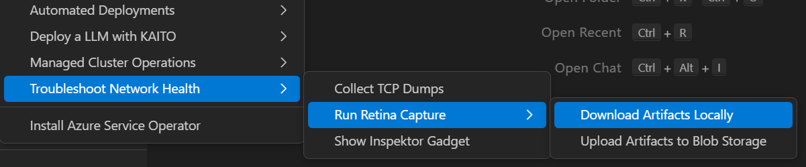
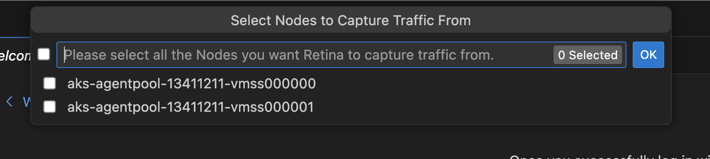
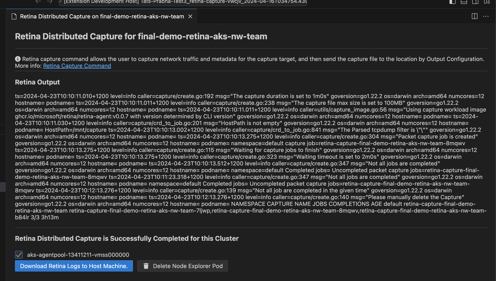
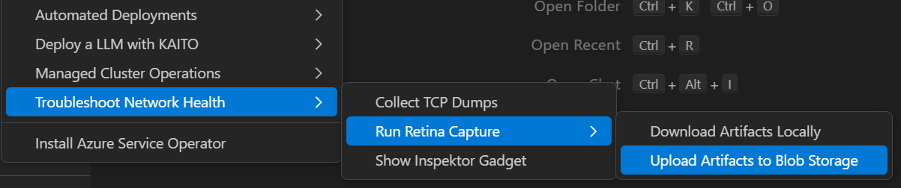
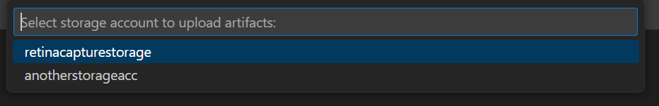
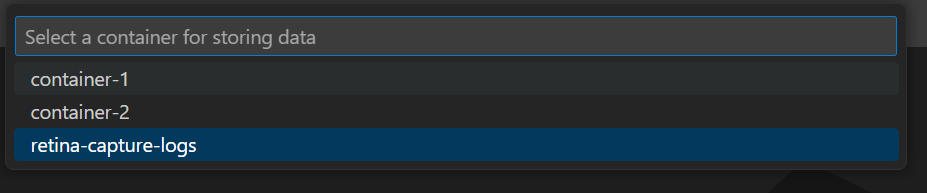
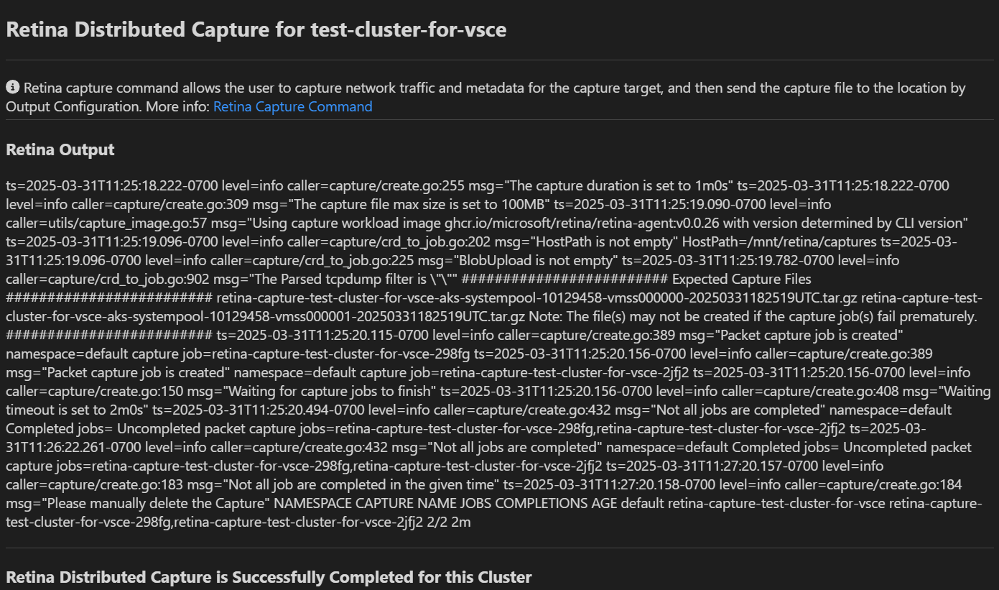
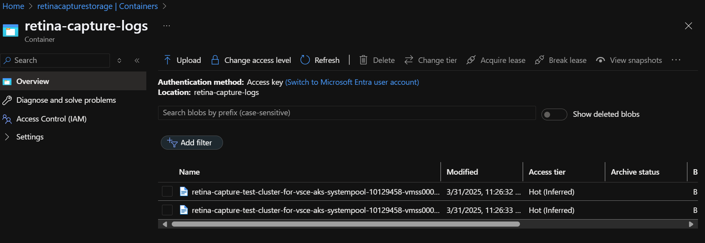

Run Retina Distributed Capture from AKS Cluster Linux Nodes
Run Retina Capture
Right click on your AKS cluster and select Troubleshoot Network Health and then click on Run Retina Capture to capture logs like iptables-rules, ip-resrouces.txt and other key distributed captures form this azure networking tool for any Linux nodes in yout AKS cluster.
There are two options to run the capture:
Download the capture locally
Step 1: Right-click on your AKS cluster and select Troubleshoot Network Health > Run Retina Capture > Download Artifacts Locally

Step 2: Select the nodes on which you want to run the capture

Step 3: Download the capture locally after the capture is completed

Upload the capture to Azure Storage
Before uploading the capture to Azure Storage, ensure the following prerequisites are met:
-
A storage account exists in the same region as your AKS cluster.
-
The storage account is configured in the Diagnostic settings of your AKS cluster.
-
A container is created within the storage account to store the capture.
Step 1: Right-click on your AKS cluster and select Troubleshoot Network Health > Run Retina Capture > Upload Artifacts to Blob Storage

Step 2: Select the storage account where you want to upload the capture

Step 3: Select the container within the storage account where you want to upload the capture

Step 4: Select the nodes on which you want to run the capture
Step 5: Success message will be displayed once the capture is completed and uploaded to the selected storage account

Step 6: Check the storage account to access the uploaded capture files. The files will be stored in the selected container with a timestamp
